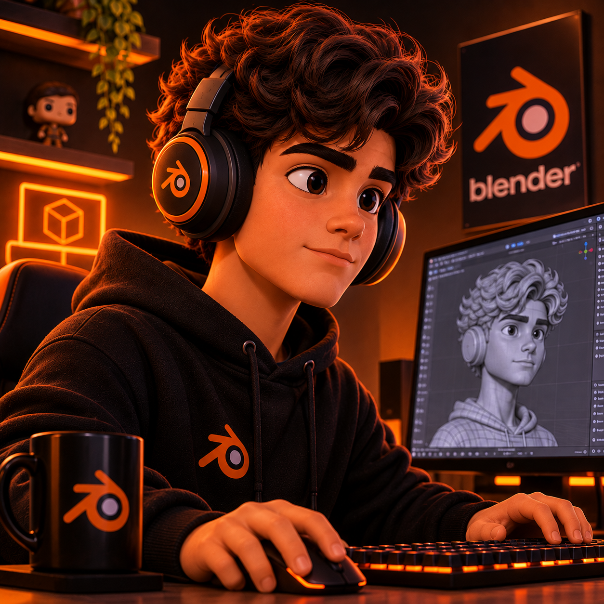
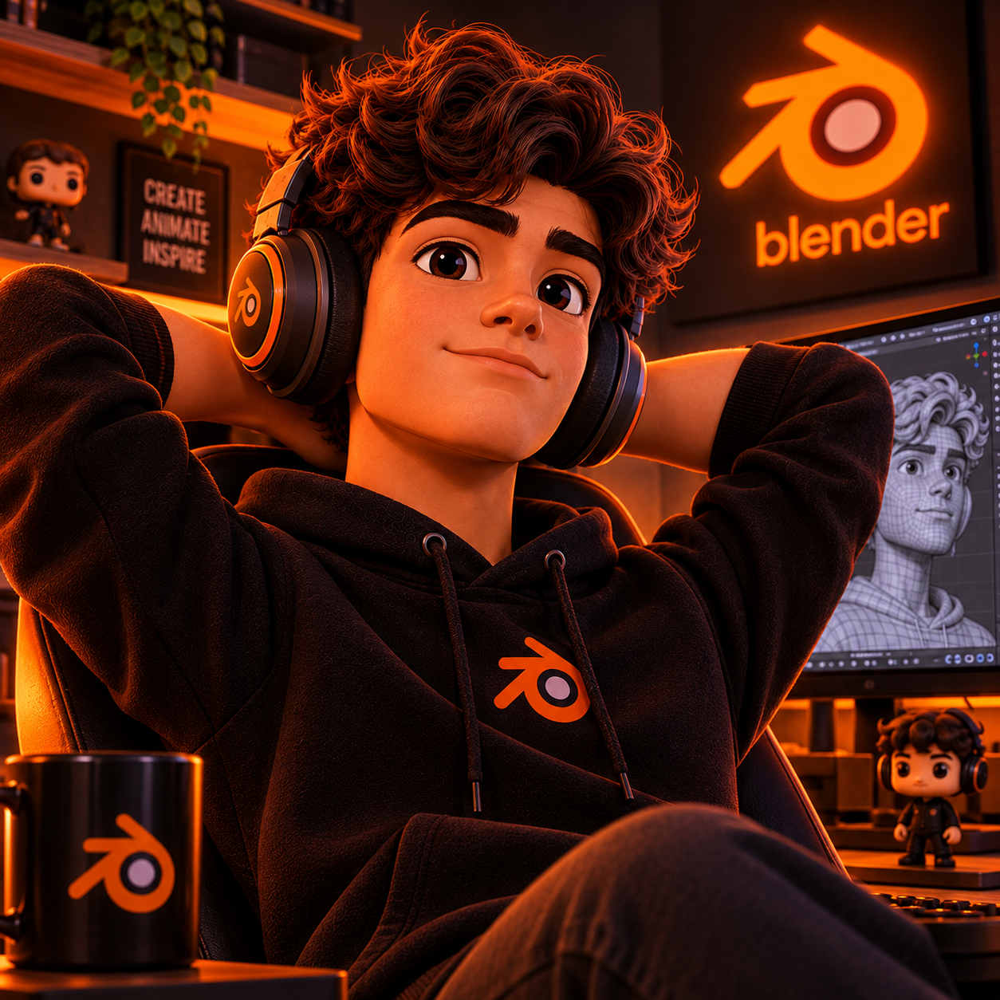

Portal da Modelagem 3D
Fundamentos de Computação Gráfica, Blender e o papel da Inteligência Artificial
Apresentação do Projeto
Este portal foi desenvolvido como parte do Projeto Integrador com o propósito de explorar e documentar os pilares da modelagem tridimensional utilizando o software Blender. O conteúdo demonstra por que o domínio técnico e a criatividade humana continuam indispensáveis mesmo diante do avanço das ferramentas de Inteligência Artificial.
Objetivo do Site
Oferecer um material didático, estruturado e visual sobre a criação de objetos 3D, abordando desde a anatomia básica das malhas (vértices, arestas e faces) até o uso de formas primárias, modelagem por referência, aplicação de materiais, texturas e escultura digital.
Integrantes da Equipe
Conheça os membros responsáveis pela pesquisa, desenvolvimento e organização deste portal:

Acylas
Contribuição: Criação da página inicial (Home), Modelagem 3D e IA, Fundamentos, organização do menu de navegação e estilização CSS.

Juan
Contribuição: Pesquisa e desenvolvimento das páginas de Malha (Mesh), Formas Primárias, Escultura Digital, testes e publicação no GitHub Pages.